Let
 be a noetherian integral domain and
be a noetherian integral domain and
 an invertible
element. Let
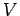 be a free
an invertible
element. Let
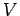 be a free
 -module of rank . Fix a basis
and let
denote the corresponding basis of matrix units for
.
We will define two endomorphisms
-module of rank . Fix a basis
and let
denote the corresponding basis of matrix units for
.
We will define two endomorphisms
 and
and
 on
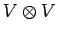 identifying
with
(we write simply instead of
if no
ambiguity can arise). Some additional notation is needed. We set
on
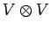 identifying
with
(we write simply instead of
if no
ambiguity can arise). Some additional notation is needed. We set
and
Further,
defines an involution on
 . Thus
. Thus
The following definition is taken from [Ha2, Equation (4.3),(4.5)] (resp. [Ha1, section 5]) using the transformation and .
There are slightly more general versions of these endomorphisms
involving additional parameters. We may omit them without loss
of generality (see [O1, Satz 2.5.8]).
The operators  and
and  are related to each other by the
equation (cf. [Ha2, Equation (4.4)])
are related to each other by the
equation (cf. [Ha2, Equation (4.4)])
For
write
. A multi-index is a
map

 frequently denoted as an
frequently denoted as an  -tuple
-tuple
 where
. The set of
all such multi-indices will be denoted by
where
. The set of
all such multi-indices will be denoted by
 .
We define
.
We define
Let
 be the
free algebra generated by the symbols for
. This is a graded algebra;
an
be the
free algebra generated by the symbols for
. This is a graded algebra;
an  -basis of the
-basis of the  -th homogeneous part
is the set
-th homogeneous part
is the set
To simplify notation we introduce a new convention to write down
frequently used
elements of  and its quotients in a convenient way.
For an endomorphism
and its quotients in a convenient way.
For an endomorphism  on
on
 we write
we write
This definition can be linearly extended to all of . The following rules are easily checked.
We will denote the residue classes of in any quotient of
 by
by
 . The
residue class
. The
residue class
 of
of
 then clearly has a similar expression in the
as the
do in the . The above introduced convention will be used
for
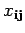 accordingly.
then clearly has a similar expression in the
as the
do in the . The above introduced convention will be used
for
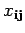 accordingly.
The object of our investigations is given by the following definition:
Here the brackets
denote the ideal generated by the enclosed
elements and
are the endomorphisms on
defined above.
Since this ideal in the definition is homogeneous, the algebra
is again graded.
Here,
 is the
is the  -linear span of the elements
for
-linear span of the elements
for
 .
The algebra
.
The algebra
 can be identified
with a generalized -construction with respect to the subset
denoted
can be identified
with a generalized -construction with respect to the subset
denoted
 in [O2, section 5].
It has been pointed out there
that it possesses the
structure of a bialgebra where comultiplication and augmentation
on the generators
are given by
in [O2, section 5].
It has been pointed out there
that it possesses the
structure of a bialgebra where comultiplication and augmentation
on the generators
are given by
In particular, the homogeneous summands
are subcoalgebras.
Furthermore, the tensor space
 is an
is an
 (resp.
)-(right-)comodule. The structure map
is defined by
(resp.
)-(right-)comodule. The structure map
is defined by
Now, if is an invertible element in  , the endomorphism
, the endomorphism
 is known to be in the algebraic span of
is known to be in the algebraic span of  ; explicitly
one has
; explicitly
one has
On the other hand, if is not invertible we really need to add the
relations
.
For instance, it has been proved in [O2, Corollary 6.2] that,
setting 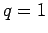, the bialgebra
 is the coordinate ring of the symplectic monoid scheme
which is defined by
is the coordinate ring of the symplectic monoid scheme
which is defined by
Here,  is the Gram-matrix of the canonical
skew bilinear form, that is
is the Gram-matrix of the canonical
skew bilinear form, that is
 where
where
 . The regular
function
. The regular
function
 is
called the coefficient of dilation (cf. [Dt]).
On the other hand,
in this case the bialgebra of the usual FRT-construction
equals
, the
commutative polynomial ring in the , which is just the
coordinate ring of the monoid scheme
is
called the coefficient of dilation (cf. [Dt]).
On the other hand,
in this case the bialgebra of the usual FRT-construction
equals
, the
commutative polynomial ring in the , which is just the
coordinate ring of the monoid scheme
 of
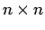-matrices.
Consequently the bialgebra of the usual FRT-construction
contains -torsion elements considered over the
ground ring
of integer
Laurent polynomials in
of
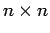-matrices.
Consequently the bialgebra of the usual FRT-construction
contains -torsion elements considered over the
ground ring
of integer
Laurent polynomials in  .
.
Let us write down a couple of consequent relations holding in
 .
For this purpose the algebraic span of the
.
For this purpose the algebraic span of the
 -endomorphisms
-endomorphisms
in
will be denoted by
 (for all 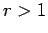).
According to [O2, section 1, 5]
in
the following relations hold for all :
(for all 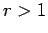).
According to [O2, section 1, 5]
in
the following relations hold for all :
The reader should also note that by [O2, Lemma 2.2] all elements
of
 must be morphisms of
-comodules.
must be morphisms of
-comodules.